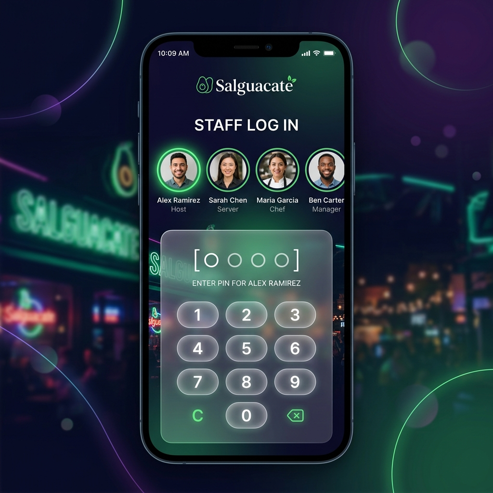
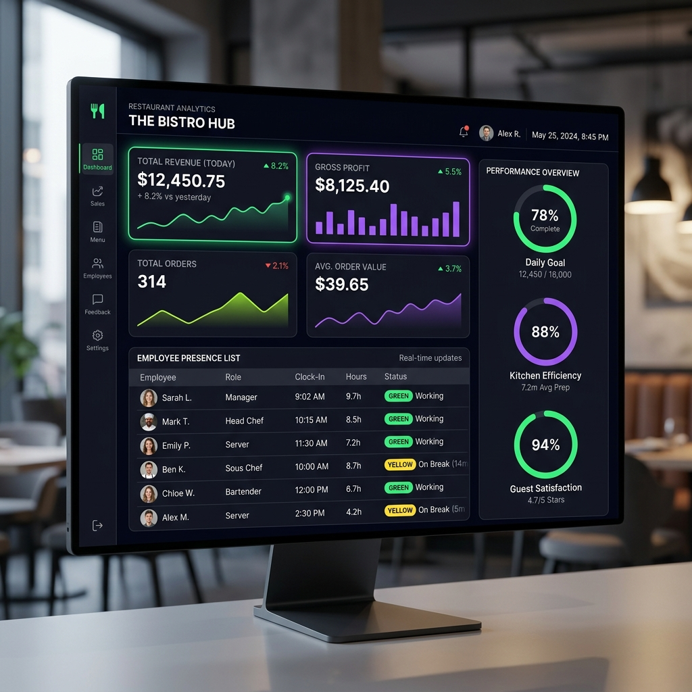

Bienvenido al manual oficial de Salguacate ERP. Esta guía está diseñada paso a paso para ayudarte a entender y controlar todas las funciones de la aplicación de tu restaurante de manera sencilla, sin tecnicismos difíciles.
💡 ¿Sabías qué? Salguacate ERP está diseñado especialmente para pantallas móviles y tablets en restauración, garantizando que puedas realizar todas tus tareas diarias directamente desde la palma de tu mano.
1. Acceso Rápido y Seguridad
Para simplificar el día a día en el bar sin comprometer la seguridad, Salguacate ERP utiliza un sistema de inicio de sesión táctil extremadamente intuitivo que no requiere escribir correos electrónicos ni contraseñas largas:
1
Selecciona tu Perfil: Al abrir la aplicación, verás el listado público con los nombres y fotos del equipo de trabajo. Pulsa sobre tu propio nombre en la lista.
2
Introduce tu PIN: Escribe tu clave PIN numérica de 4 dígitos usando el teclado táctil de la pantalla.
3
Entrar: Pulsa el botón verde "Acceder". Si el PIN es correcto, entrarás a tu pantalla principal al instante.

Figura 1: Pantalla táctil de acceso mediante perfiles y teclado PIN.
2. Tu Panel de Control (Dashboard)
La pantalla inicial se adapta automáticamente según tu tipo de cuenta para mostrarte únicamente lo que necesitas en cada momento:
👑 Perfil de Administración OwnerManager
Los propietarios y encargados acceden a una vista completa con gráficos interactivos y métricas financieras:
Ingresos y Gastos: Visualiza en tiempo real las ventas totales registradas en los cierres de caja del mes en curso y el beneficio neto.
Presencia en Tiempo Real: Un widget dinámico exclusivo que te muestra instantáneamente qué empleados están trabajando hoy, quiénes están en descanso y quiénes fuera de turno.
Alertas Críticas: Botones destacados que te avisan si hay stock bajo en el almacén o checklists diarias pendientes.

Figura 2: Dashboard ejecutivo con KPIs comerciales y presencia activa de personal.
👤 Perfil de Personal Staff
Los camareros y cocineros disponen de una pantalla simplificada centrada en su día a día:
Turno de Hoy: Te indica claramente a qué hora empieza y termina tu turno programado para hoy en el cuadrante, con qué local te corresponde trabajar y los compañeros que te acompañan. Si tienes el día libre, te saludará con un alegre "¡Hoy libras! 🎉".
Checklist de Tareas: Muestra el listado de tareas obligatorias del local asignadas para el día de hoy. Puedes marcarlas como completadas pulsando directamente en el círculo interactivo.
3. Registro Horario (Fichar)
Salguacate ERP cumple de manera estricta y transparente con la normativa de registro de jornada laboral. Como empleado, puedes fichar la entrada, descansos y salida con extrema sencillez:
1
Fichar Entrada: Al llegar a tu puesto de trabajo, ve a la sección "Fichar" o pulsa en "Control de Horario" desde el inicio. Pulsa el gran botón verde "Fichar Entrada". El sistema guardará la hora exacta.
2
Pausas y Descansos: Si te corresponde tu descanso para comer o tomar un café, pulsa el botón amarillo "Descanso". El sistema pausará tu jornada temporalmente. Al volver, pulsa "Volver" para reanudar.
3
Finalizar Turno: Al terminar tu jornada, pulsa el botón rojo "Finalizar". Tu registro del día quedará cerrado y archivado en la base de datos para la contabilidad mensual.
4. Control de Almacén y Pedidos por WhatsApp
La gestión de inventario crítico está diseñada para evitar roturas de stock. La aplicación analiza los niveles del almacén de manera continua y simplifica el envío de pedidos a los proveedores:
📈 Automatización: Cuando un producto del almacén desciende por debajo de su cantidad mínima requerida, el sistema activa automáticamente un botón de alerta de stock bajo.
1
Generar Pedido: En la sección de reposición de stock, la aplicación agrupa de forma inteligente todos los artículos que están por debajo del mínimo, ordenados por su proveedor habitual.
2
Enviar Pedido Directo: El sistema extrae el número de teléfono móvil real de la ficha del proveedor. Al pulsar en "Enviar Pedido", se abrirá instantáneamente un chat de WhatsApp Web con un mensaje pre-redactado de manera formal con el listado detallado de productos y cantidades a pedir. ¡Solo tienes que darle a enviar!
5. El Asistente Inteligente "Salguabot" 🤖
Salguacate ERP incorpora una potente Inteligencia Artificial basada en los modelos avanzados de Google que te asiste en lenguaje natural:
El Chat Flotante: Verás una burbuja flotante con destellos en la esquina inferior derecha. Al pulsarla, se abrirá la ventana de conversación con Salguabot.
¿Qué le puedes pedir en lenguaje natural? El asistente conoce el estado real de tu inventario y plantilla, y puede realizar acciones automáticas mediante herramientas internas. Puedes escribirle órdenes sencillas como:
"María ha llegado tarde, por favor fíchale la entrada en su perfil."
"Resta 3 botellas de refresco de cola del local Principal."
"Crea un concierto acústico en la agenda para el próximo sábado a las 21:00."
Autogeneración Inteligente de Cuadrantes (Turnos): En la pantalla de Recursos Humanos, verás el botón premium con destellos **"Autogenerar con IA"**. Al pulsarlo, Salguabot planificará de manera autónoma los turnos semanales de toda la plantilla basándose en los empleados activos, asegurando cubrir todos los locales y horarios de forma equitativa.
📄 Cómo Guardar o Imprimir esta Guía en PDF
Para tener esta guía siempre a mano en formato PDF digital o para imprimirla en papel físico, sigue estas sencillas instrucciones:
1
Pulsa el botón verde de abajo **"Imprimir / Guardar en PDF"** o presiona la combinación de teclas **Ctrl + P** en tu teclado.
2
En el cuadro de diálogo que se abre, selecciona la opción **"Guardar como PDF"** (o *Save as PDF*) en el menú desplegable de "Destino".
3
Asegúrate de marcar la opción **"Gráficos de fondo"** (o *Background graphics*) para que los colores y capturas se muestren perfectamente. ¡Haz clic en Guardar!